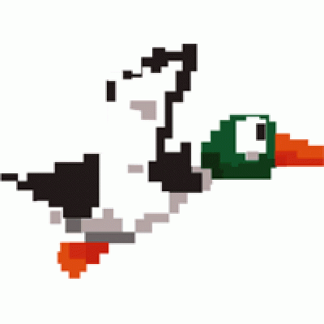

<polymer-element name="fa-layout">
    <template>
        <style>
            .drawer {
                position: absolute;
                top : 0;
                left : 0;
                width : 310px;
                z-index: 100;
                height: 100%;
                overflow: hidden;

                transition: transform 200ms linear;
                -moz-transition: -moz-transform 200ms linear;
                -webkit-transition: -webkit-transform 200ms linear;
                -ms-transition: -ms-transform 200ms linear;

                transform: translate3d(-310px, 0, 0);
                -moz-transform: translate3d(-310px, 0, 0);
                -webkit-transform: translate3d(-310px, 0, 0);
                -ms-transform: translate3d(-310px, 0, 0);
            }

            .drawer.open {
                transform: translate3d(0, 0, 0);
                -moz-transform: translate3d(0, 0, 0);
                -webkit-transform: translate3d(0, 0, 0);
                -ms-transform: translate3d(0, 0, 0);
            }

            .nav-overflow {
                overflow: auto;
            }


            .nav-overflow::-webkit-scrollbar {  
                width: 12px;  
            }  
            .nav-overflow::-webkit-scrollbar-track {  
                background-color: transparent;  
            }  
            .nav-overflow::-webkit-scrollbar-thumb {  
                background-color: transparent;  
            }  
            .nav-overflow::-webkit-scrollbar-thumb:hover {  
                background-color: transparent;  
            }

            .header {
                padding: 20px;
                border-bottom: 1px solid #ccc;
                opacity: 1;

                transition: opacity 200ms linear;
                -moz-transition: opacity 200ms linear;
                -webkit-transition: opacity 200ms linear;
                -ms-transition: opacity 200ms linear;
            }

            .header.opened {
                opacity: .2;
            }

            .fullsize {
                position: absolute;
                top: 0;
                left: 0;
                width: 100%;
                height: 100%;
            }

            .content {
                position: absolute;
                top: 0;
                left: 0;
                width: 100%;
                height: 100%;
                opacity: 1;

                transition: opacity 200ms linear;
                -moz-transition: opacity 200ms linear;
                -webkit-transition: opacity 200ms linear;
                -ms-transition: opacity 200ms linear;
            }

            .content.opened {
                opacity: .2;
            }

            .footer {
                background: url('../images/grass.png') repeat-x top left;
                height: 135px;
                width: 100%;
                position: absolute;
                bottom: 0;
                left: 0;
                z-index: 1000;
                text-align: center;
            }

            .logo {
                margin-top: 75px;
                margin-left: 300px;
            }

            a {
                font-size: 14px;
                color: blue;
                cursor: pointer;
            }

            :host {
                display: block;
                height: 100%;
            }

            @media(max-width: 1200px) {
                .logo {
                    margin-left: 0px;
                    width: 700px;
                }
            }

            @media(max-width: 768px) {
                .footer {
                    overflow: hidden;
                    height: 55px;
                    background-size: 171px 55px;
                    -moz-background-size: 171px 55px;
                    -webkit-background-size: 171px 55px;
                    -ms-background-size: 171px 55px;
                }
                .logo {
                    margin-top: 30px;
                    margin-left: 0px;
                    width: 350px;
                }
            }
        </style>

        <core-media-query query="max-width: 768px" queryMatches="{{size.xs}}" ></core-media-query>
        <core-media-query query="min-width: 769px" queryMatches="{{size.md}}" ></core-media-query>
        <core-media-query query="min-width: 1200px" queryMatches="{{size.lg}}" ></core-media-query>

        <div hidden?="{{isDesktop}}" style="position: absolute; top: 0; left: 0; z-index: 500">
            <a on-tap="{{open}}"></a>
        </div>

        <div layout vertical style="height: 100%">
            <!--<div class="header {{(openDrawer && !isDesktop) ? 'opened' : ''}}" on-tap="{{_checkDrawer}}">
                <div hidden?="{{!isPhone}}">
                    <a on-tap="{{open}}">Nav</a> I am phone
                </div>
                <div hidden?="{{!isTablet}}">
                    <a on-tap="{{open}}">Nav</a> I am tablet
                </div>
                <div hidden?="{{!isDesktop}}">
                    I am desktop
                </div>
            </div>-->

            <div flex style="position:relative">
                <template bind if="{{isDesktop}}">
                    <div class="fullsize">
                        <div layout horizontal style="height:100%">
                            
                            <div class="nav-overflow">
                                <div layout vertical style="height:100%">
                                    <div flex></div>
                                    <div>
                                        <content select="[nav]"></content>
                                    </div>
                                </div>
                            </div>

                            <div flex style="position:relative">
                                <div class="content {{(openDrawer && !isDesktop) ? 'opened' : ''}}">
                                    <content select="[content]"></content>
                                </div>
                            </div>
                        </div>
                    </div>
                </template>

                <template bind if="{{!isDesktop}}">
                    <div class="content {{(openDrawer && !isDesktop) ? 'opened' : ''}}" on-tap="{{_checkDrawer}}">
                        <content select="[content]"></content>
                    </div>
                </template>
            </div>

            <div class="footer">
                
            </div>
        </div>

        <template bind if="{{!isDesktop}}">
            <div class="drawer {{openDrawer ? 'open' : ''}}" on-tap="{{_checkDrawer}}">
                <div class="nav-overflow">
                    <div layout vertical style="height:100%">
                        <div flex></div>
                        <div>
                            <content select="[nav]"></content>
                        </div>
                    </div>
                </div>
            </div>
        </template>


    </template>
    <script>
        Polymer('fa-layout', {
            size : {
                xs : false,
                md : false,
                lg : false
            },

            isPhone : false,
            isTablet : false,
            isDesktop : false,

            openDrawer : false,

            observe : {
                'size.xs' : '_updateSize',
                'size.md' : '_updateSize',
                'size.lg' : '_updateSize'
            },

            _updateSize : function() {
                this.isPhone = false;
                this.isTablet = false;
                this.isDesktop = false;

                if( this.size.xs ) this.isPhone = true;
                else if( this.size.md && !this.size.lg ) this.isTablet = true;
                else if( this.size.lg ) this.isDesktop = true;
            },

            _checkDrawer : function() {
                if( this.openDrawer ) this.close();
            },

            open : function(e) {
                if( e ) {
                    e.preventDefault();
                    e.stopPropagation();
                }

                this.openDrawer = true;
            },

            close : function() {
                this.openDrawer = false;
            },

            toggle : function() {
                this.openDrawer = !this.openDrawer;
            }

        });
    </script>
</polymer-element>